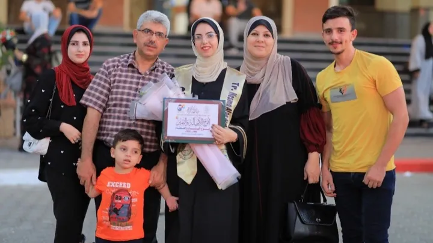

No Matter How Big or Small, Your Donation Can Make a Huge Impact to a Gazan Family in Need.
Don't Know Where to Send your Donation?
Many people that are able to make some sort of financial contribution to these causes simply don't
know where to donate their money in order for it to be most impactful. There are countless
credible organizations working together to fund enough to be able to provide food and desperately needed
to the suffering population in Gaza. Below are both organizations and personal GoFundMe campaigns that
will be directly given to the people in Palestine.
Reputable Charities to Help those Affected by the Humanitarian Crisis:
Palestine Children's Relief Fund
As the leading nonprofit that brings hundreds of volunteer medical professionals to the Middle East annually
to treat children and provide crucial nutrition and humanitarian aid, the PCRF depend on your support.
Save the Children
Since 1919, Save the Children has held the mission that all children have the right to grow up healthy, educated and safe.
Emergency Response to Crisis with American Friends Service Committee
Bringing together people of all faiths and backgrounds to challenge injustice and build peace around the globe, the AFSC is collecting
donations to urgently provide care to citizens affected by the genocide in Gaza.
The United Nations Relief and Works Agency
Providing primary and vocational education, healthcare, relief and social services, infrastructure, camp improvements,
emergency response and supplying food, the UNRWA works to help those affected by armed conflicts around the world.
Doctors Without Borders
MSF (Doctors Without Borders) staff have been working in Gaza’s hospitals and clinics throughout the current conflict.
They have been crucial in providing surgical care, wound and burn care, post-partum care, vaccination,
mental health support and more to thousands of victims. They are also helping to coordinate the flow
of essentials such as food and clean water through the border in Rafah.
Finding Other Charities to Support
If you would like to find more possible organizations fundraising for Gaza,
this list is sure to start you in the right direction.
Personal GoFundMe Campaigns for People Currently in Gaza:
Nour's Family
Nour, a woman living in Gaza, currently has 3 members in urgent need of health care. Her father is a diabetic patient, her mother has numerous heart problems, and her son needs to be seen
by a healthcare professional. They need to your help to be able to travel outside of danger.

Help Get Yousef, 4.5 years old, His Treatment
Yousef, a young child and youngest brother of the campaign's host, is nonverbal and unable to move as a child his age should.
Local doctors advised the campaign's host to seek medical treatment in Egypt to understand the causes and treat
Yousef's condition. They have a large family and are in need of extra support.
Entire Family Trapped in Gaza
For many like the families fundraising here, acquiring clean water and food is a near-impossible task. Because of the seige
in their neighborhoods and the cost to evacuate outside, they need outside help to ensure everyone's safety. These families
all have children and are fighting to stay strong.
How To Find Other Campaigns to Contribute to and Share:
The families in need listed above are only a few out of the hundreds of thousands needing
life-saving aid. clean water, food, and safe shelter. Find other Campaigns via the button below to help more victims.